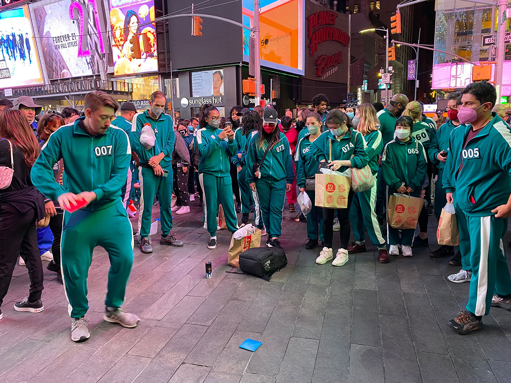

K-DRAMA란?
대한민국에서 제작된 드라마를 총칭해서 말하는 말. 한국뿐만 아니라 주로 동아시아, 중동, 중앙아시아, 동남아, 남아시아, 중남미 등을 중심으로 큰 인기를 얻게 되어 질적 발전을 거듭한 끝에, 현재는 K-POP과 더불어 한류를 이끌어 나가는 중심문화로 자리잡게 되었으며 여러 나라에 수출되고 있다. 줄여서 '한드'라고도 부른다. 사실상 구 홍콩영화를 대체한 상태다.
대한민국에서 제작된 드라마를 총칭해서 말하는 말. 한국뿐만 아니라 주로 동아시아, 중동, 중앙아시아, 동남아, 남아시아, 중남미 등을 중심으로 큰 인기를 얻게 되어 질적 발전을 거듭한 끝에, 현재는 K-POP과 더불어 한류를 이끌어 나가는 중심문화로 자리잡게 되었으며 여러 나라에 수출되고 있다. 줄여서 '한드'라고도 부른다. 사실상 구 홍콩영화를 대체한 상태다.
과거 드라마는 제작 환경이 그야말로 열악하기 그지없었다. 그 원인을 꼽자면 다음과 같다.
<오징어 게임>의 세계 흥행 성적은 한국 드라마 중에서도 독보적이다. 그러나 홀로 튀는 예외적
사건은 아니다. ‘K드라마 현상’으로 묶을 만한 흐름이 보인다. 지난해 12월 나온 스릴러물 <스위트홈>은
한국 드라마 최초로 전 세계 넷플릭스 시청률 10위권(톱 10)에 올랐다. 최고 순위는 3위였다.
지난 10월15일 공개된 <마이 네임> 역시 한 달 가까이 드라마 부문 10위권을 유지했다.
11월19일 방영을 시작한 <지옥>은 열흘 넘게 세계 시청률 1위에 올라 있다(12월1일 기준).
외신은 리뷰 기사를 쏟아내고, 해외 누리꾼들은 SNS에 관련 밈(meme, 패러디)을 퍼뜨린다.

K드라마 현상의 핵심은 ‘서구권 인기몰이’다. 당초 주로 흥행하는 무대가 아시아권역 내인 ‘한류 드라마’와
구분하기 위해 생겨난 용어가 K드라마다. 자동차나 휴대전화, 운동선수의 해외 성공과 달리 K드라마의 인기에는
단순히 ‘선진국 기술을 따라잡았다’ 이상의 의미가 있다. 문화 콘텐츠는 사상을 담기 때문이다. 세계 영화 시장을
미국이 석권해온 까닭은 미국이 가장 강하거나 부유한 국가여서만은 아니다. 민주주의, 자유, 시민권 등 할리우드가
전파해온 ‘미국적’ 사상을 세계가 보편타당하게 받아들이기 때문이다. K드라마의 약진은 이 전통적 세계에 균열을
불러왔다.
참가자 456명이 우승 상금을 놓고 경쟁하는 '오징어 게임'이 현실화된다. 넷플릭스는 14일(현지시간)
공식 트위터를 통해 한국 드라마 '오징어 게임'의 콘셉트를 차용한 리얼리티 프로그램 '오징어 게임:더
챌린지'를 제작한다고 밝혔다. 우승 상금은 456만달러(약 60억원)다. 넷플릭스는 “역대 리얼리티 쇼
가운데 가장 많은 상금을 이 대회에 내걸었다”면서 “참가자 수도 역대 최다”라고 강조했다.
참가자들은 드라마 '오징어 게임'에서 등장했던 각종 게임과 넷플릭스 측이 새롭게 추가한 게임을 진행하면서 최종
우승자를 가리게 된다. 영어를 사용할 수 있는 21세 이상의 일반인이면 전 세계 누구나 이 프로그램 참가를
신청할 수 있다. 참가 신청 페이지에 따르면 대회는 2023년 초 개최되며 약 4주간 진행될 예정이다.
넷플릭스는 “드라마의 내용과 달리 대회 참가자들이 다치는 일은 없다”면서 “큰 상금이 걸린 이번 대회에서
최악의 운명은 빈손으로 돌아가는 것”이라고 홍보했다.
공중파 드라마에서 개선해야할 가장 큰 사안은 심의기준이다. 지상파 방송은 케이블 드라마에 비해서 심의 기준이 세게 적용이 되기 때문에 케이블 드라마에 비해 한계가 있다. 게다가 표현의 제약도 많아서 조금이라도 자극적인 장면이 나오거나 욕설대사가 나오면 곧바로 방심위의 제재가 들어간다. 그래서 시청자들 사이에서는 별것도 아닌것 갖고 너무 과하게 징계한다는 말이 매우 많으며 그런 대부분의 시청자들은 넷플릭스, 왓챠 등에서 나오는 웹드라마로 갈아탄다고 한다. 거기서는 한국 영화 수준과 비슷하거나 더 심한 욕설이 대놓고 많이 나와도 방심위에서 징계를 내릴 수 없기 때문이다.
* 예시로 넷플릭스 시리즈 <스위트홈>이 있다.